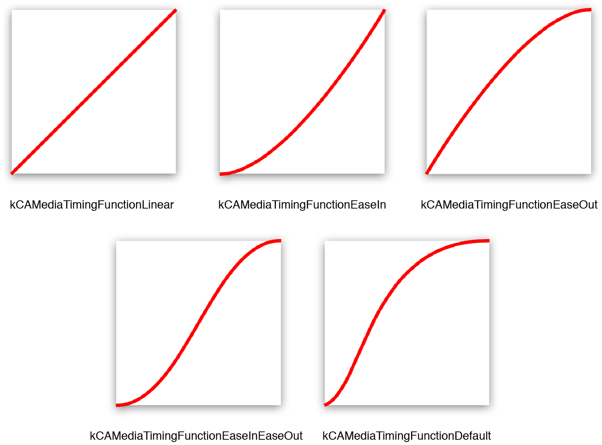
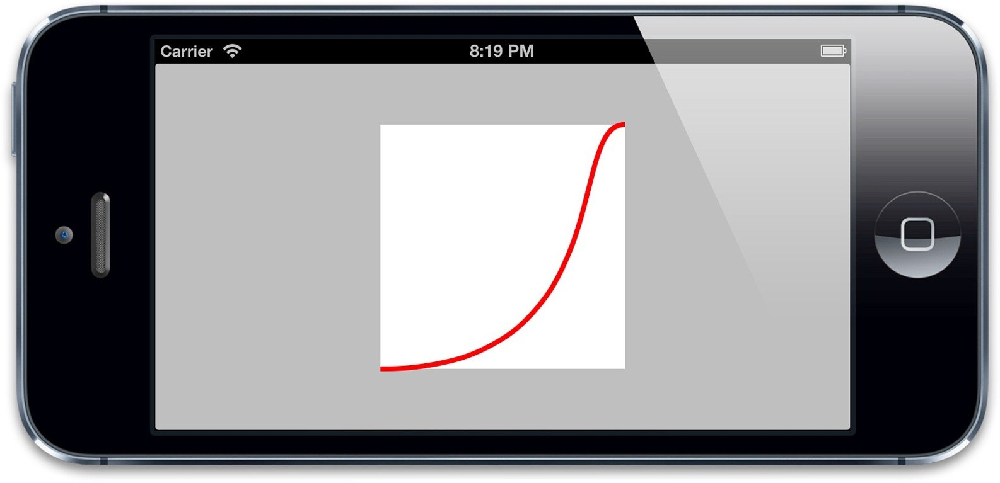
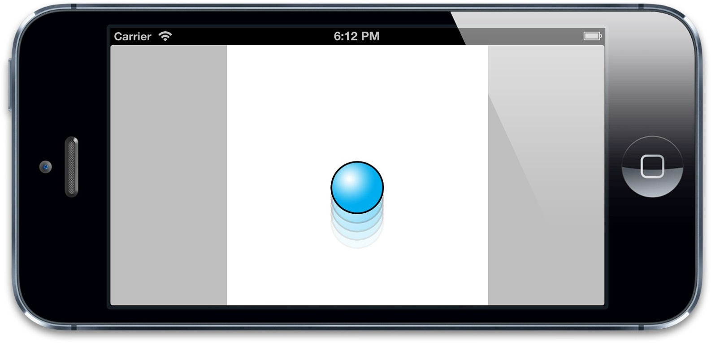

自定义缓冲函数
自定义缓冲函数
在第八章中，我们给时钟项目添加了动画。看起来很赞，但是如果有合适的缓冲函数就更好了。在显示世界中，钟表指针转动的时候，通常起步很慢，然后迅速啪地一声，最后缓冲到终点。但是标准的缓冲函数在这里每一个适合它，那该如何创建一个新的呢？
除了+functionWithName:之外，CAMediaTimingFunction同样有另一个构造函数，一个有四个浮点参数的+functionWithControlPoints::::（注意这里奇怪的语法，并没有包含具体每个参数的名称，这在objective-C中是合法的，但是却违反了苹果对方法命名的指导方针，而且看起来是一个奇怪的设计）。
使用这个方法，我们可以创建一个自定义的缓冲函数，来匹配我们的时钟动画，为了理解如何使用这个方法，我们要了解一些CAMediaTimingFunction是如何工作的。
三次贝塞尔曲线
CAMediaTimingFunction函数的主要原则在于它把输入的时间转换成起点和终点之间成比例的改变。我们可以用一个简单的图标来解释，横轴代表时间，纵轴代表改变的量，于是线性的缓冲就是一条从起点开始的简单的斜线（图10.1）。

图10.1 线性缓冲函数的图像
这条曲线的斜率代表了速度，斜率的改变代表了加速度，原则上来说，任何加速的曲线都可以用这种图像来表示，但是CAMediaTimingFunction使用了一个叫做三次贝塞尔曲线的函数，它只可以产出指定缓冲函数的子集（我们之前在第八章中创建CAKeyframeAnimation路径的时候提到过三次贝塞尔曲线）。
你或许会回想起，一个三次贝塞尔曲线通过四个点来定义，第一个和最后一个点代表了曲线的起点和终点，剩下中间两个点叫做控制点，因为它们控制了曲线的形状，贝塞尔曲线的控制点其实是位于曲线之外的点，也就是说曲线并不一定要穿过它们。你可以把它们想象成吸引经过它们曲线的磁铁。
图10.2展示了一个三次贝塞尔缓冲函数的例子

图10.2 三次贝塞尔缓冲函数
实际上它是一个很奇怪的函数，先加速，然后减速，最后快到达终点的时候又加速，那么标准的缓冲函数又该如何用图像来表示呢？
CAMediaTimingFunction有一个叫做-getControlPointAtIndex:values:的方法，可以用来检索曲线的点，这个方法的设计的确有点奇怪（或许也就只有苹果能回答为什么不简单返回一个CGPoint），但是使用它我们可以找到标准缓冲函数的点，然后用UIBezierPath和CAShapeLayer来把它画出来。
曲线的起始和终点始终是{0, 0}和{1, 1}，于是我们只需要检索曲线的第二个和第三个点（控制点）。具体代码见清单10.4。所有的标准缓冲函数的图像见图10.3。
清单10.4 使用UIBezierPath绘制CAMediaTimingFunction
@interface ViewController ()
@property (nonatomic, weak) IBOutlet UIView *layerView;
@end
@implementation ViewController
- (void)viewDidLoad
{
[super viewDidLoad];
//create timing function
CAMediaTimingFunction *function = [CAMediaTimingFunction functionWithName: kCAMediaTimingFunctionEaseOut];
//get control points
CGPoint controlPoint1, controlPoint2;
[function getControlPointAtIndex:1 values:(float *)&controlPoint1];
[function getControlPointAtIndex:2 values:(float *)&controlPoint2];
//create curve
UIBezierPath *path = [[UIBezierPath alloc] init];
[path moveToPoint:CGPointZero];
[path addCurveToPoint:CGPointMake(1, 1)
controlPoint1:controlPoint1 controlPoint2:controlPoint2];
//scale the path up to a reasonable size for display
[path applyTransform:CGAffineTransformMakeScale(200, 200)];
//create shape layer
CAShapeLayer *shapeLayer = [CAShapeLayer layer];
shapeLayer.strokeColor = [UIColor redColor].CGColor;
shapeLayer.fillColor = [UIColor clearColor].CGColor;
shapeLayer.lineWidth = 4.0f;
shapeLayer.path = path.CGPath;
[self.layerView.layer addSublayer:shapeLayer];
//flip geometry so that 0,0 is in the bottom-left
self.layerView.layer.geometryFlipped = YES;
}
@end

图10.3 标准CAMediaTimingFunction缓冲曲线
那么对于我们自定义时钟指针的缓冲函数来说，我们需要初始微弱，然后迅速上升，最后缓冲到终点的曲线，通过一些实验之后，最终结果如下：
[CAMediaTimingFunction functionWithControlPoints:1 :0 :0.75 :1];
如果把它转换成缓冲函数的图像，最后如图10.4所示，如果把它添加到时钟的程序，就形成了之前一直期待的非常赞的效果（见代清单10.5）。

图10.4 自定义适合时钟的缓冲函数
清单10.5 添加了自定义缓冲函数的时钟程序
- (void)setAngle:(CGFloat)angle forHand:(UIView *)handView animated:(BOOL)animated
{
//generate transform
CATransform3D transform = CATransform3DMakeRotation(angle, 0, 0, 1);
if (animated) {
//create transform animation
CABasicAnimation *animation = [CABasicAnimation animation];
animation.keyPath = @"transform";
animation.fromValue = [handView.layer.presentationLayer valueForKey:@"transform"];
animation.toValue = [NSValue valueWithCATransform3D:transform];
animation.duration = 0.5;
animation.delegate = self;
animation.timingFunction = [CAMediaTimingFunction functionWithControlPoints:1 :0 :0.75 :1];
//apply animation
handView.layer.transform = transform;
[handView.layer addAnimation:animation forKey:nil];
} else {
//set transform directly
handView.layer.transform = transform;
}
}
更加复杂的动画曲线
考虑一个橡胶球掉落到坚硬的地面的场景，当开始下落的时候，它会持续加速知道落到地面，然后经过几次反弹，最后停下来。如果用一张图来说明，它会如图10.5所示。

图10.5 一个没法用三次贝塞尔曲线描述的反弹的动画
这种效果没法用一个简单的三次贝塞尔曲线表示，于是不能用CAMediaTimingFunction来完成。但如果想要实现这样的效果，可以用如下几种方法：
- 用
CAKeyframeAnimation创建一个动画，然后分割成几个步骤，每个小步骤使用自己的计时函数（具体下节介绍）。 - 使用定时器逐帧更新实现动画（见第11章，“基于定时器的动画”）。
基于关键帧的缓冲
为了使用关键帧实现反弹动画，我们需要在缓冲曲线中对每一个显著的点创建一个关键帧（在这个情况下，关键点也就是每次反弹的峰值），然后应用缓冲函数把每段曲线连接起来。同时，我们也需要通过keyTimes来指定每个关键帧的时间偏移，由于每次反弹的时间都会减少，于是关键帧并不会均匀分布。
清单10.6展示了实现反弹球动画的代码（见图10.6）
清单10.6 使用关键帧实现反弹球的动画
@interface ViewController ()
@property (nonatomic, weak) IBOutlet UIView *containerView;
@property (nonatomic, strong) UIImageView *ballView;
@end
@implementation ViewController
- (void)viewDidLoad
{
[super viewDidLoad];
//add ball image view
UIImage *ballImage = [UIImage imageNamed:@"Ball.png"];
self.ballView = [[UIImageView alloc] initWithImage:ballImage];
[self.containerView addSubview:self.ballView];
//animate
[self animate];
}
- (void)touchesBegan:(NSSet *)touches withEvent:(UIEvent *)event
{
//replay animation on tap
[self animate];
}
- (void)animate
{
//reset ball to top of screen
self.ballView.center = CGPointMake(150, 32);
//create keyframe animation
CAKeyframeAnimation *animation = [CAKeyframeAnimation animation];
animation.keyPath = @"position";
animation.duration = 1.0;
animation.delegate = self;
animation.values = @[
[NSValue valueWithCGPoint:CGPointMake(150, 32)],
[NSValue valueWithCGPoint:CGPointMake(150, 268)],
[NSValue valueWithCGPoint:CGPointMake(150, 140)],
[NSValue valueWithCGPoint:CGPointMake(150, 268)],
[NSValue valueWithCGPoint:CGPointMake(150, 220)],
[NSValue valueWithCGPoint:CGPointMake(150, 268)],
[NSValue valueWithCGPoint:CGPointMake(150, 250)],
[NSValue valueWithCGPoint:CGPointMake(150, 268)]
];
animation.timingFunctions = @[
[CAMediaTimingFunction functionWithName: kCAMediaTimingFunctionEaseIn],
[CAMediaTimingFunction functionWithName: kCAMediaTimingFunctionEaseOut],
[CAMediaTimingFunction functionWithName: kCAMediaTimingFunctionEaseIn],
[CAMediaTimingFunction functionWithName: kCAMediaTimingFunctionEaseOut],
[CAMediaTimingFunction functionWithName: kCAMediaTimingFunctionEaseIn],
[CAMediaTimingFunction functionWithName: kCAMediaTimingFunctionEaseOut],
[CAMediaTimingFunction functionWithName: kCAMediaTimingFunctionEaseIn]
];
animation.keyTimes = @[@0.0, @0.3, @0.5, @0.7, @0.8, @0.9, @0.95, @1.0];
//apply animation
self.ballView.layer.position = CGPointMake(150, 268);
[self.ballView.layer addAnimation:animation forKey:nil];
}
@end

图10.6 使用关键帧实现的反弹球动画
这种方式还算不错，但是实现起来略显笨重（因为要不停地尝试计算各种关键帧和时间偏移）并且和动画强绑定了（因为如果要改变动画的一个属性，那就意味着要重新计算所有的关键帧）。那该如何写一个方法，用缓冲函数来把任何简单的属性动画转换成关键帧动画呢，下面我们来实现它。
流程自动化
在清单10.6中，我们把动画分割成相当大的几块，然后用Core Animation的缓冲进入和缓冲退出函数来大约形成我们想要的曲线。但如果我们把动画分割成更小的几部分，那么我们就可以用直线来拼接这些曲线（也就是线性缓冲）。为了实现自动化，我们需要知道如何做如下两件事情：
- 自动把任意属性动画分割成多个关键帧
- 用一个数学函数表示弹性动画，使得可以对帧做便宜
为了解决第一个问题，我们需要复制Core Animation的插值机制。这是一个传入起点和终点，然后在这两个点之间指定时间点产出一个新点的机制。对于简单的浮点起始值，公式如下（假设时间从0到1）：
value = (endValue – startValue) × time + startValue;
那么如果要插入一个类似于CGPoint，CGColorRef或者CATransform3D这种更加复杂类型的值，我们可以简单地对每个独立的元素应用这个方法（也就CGPoint中的x和y值，CGColorRef中的红，蓝，绿，透明值，或者是CATransform3D中独立矩阵的坐标）。我们同样需要一些逻辑在插值之前对对象拆解值，然后在插值之后在重新封装成对象，也就是说需要实时地检查类型。
一旦我们可以用代码获取属性动画的起始值之间的任意插值，我们就可以把动画分割成许多独立的关键帧，然后产出一个线性的关键帧动画。清单10.7展示了相关代码。
注意到我们用了60 x 动画时间（秒做单位）作为关键帧的个数，这时因为Core Animation按照每秒60帧去渲染屏幕更新，所以如果我们每秒生成60个关键帧，就可以保证动画足够的平滑（尽管实际上很可能用更少的帧率就可以达到很好的效果）。
我们在示例中仅仅引入了对CGPoint类型的插值代码。但是，从代码中很清楚能看出如何扩展成支持别的类型。作为不能识别类型的备选方案，我们仅仅在前一半返回了fromValue，在后一半返回了toValue。
清单10.7 使用插入的值创建一个关键帧动画
float interpolate(float from, float to, float time)
{
return (to - from) * time + from;
}
- (id)interpolateFromValue:(id)fromValue toValue:(id)toValue time:(float)time
{
if ([fromValue isKindOfClass:[NSValue class]]) {
//get type
const char *type = [fromValue objCType];
if (strcmp(type, @encode(CGPoint)) == 0) {
CGPoint from = [fromValue CGPointValue];
CGPoint to = [toValue CGPointValue];
CGPoint result = CGPointMake(interpolate(from.x, to.x, time), interpolate(from.y, to.y, time));
return [NSValue valueWithCGPoint:result];
}
}
//provide safe default implementation
return (time < 0.5)? fromValue: toValue;
}
- (void)animate
{
//reset ball to top of screen
self.ballView.center = CGPointMake(150, 32);
//set up animation parameters
NSValue *fromValue = [NSValue valueWithCGPoint:CGPointMake(150, 32)];
NSValue *toValue = [NSValue valueWithCGPoint:CGPointMake(150, 268)];
CFTimeInterval duration = 1.0;
//generate keyframes
NSInteger numFrames = duration * 60;
NSMutableArray *frames = [NSMutableArray array];
for (int i = 0; i < numFrames; i++) {
float time = 1 / (float)numFrames * i;
[frames addObject:[self interpolateFromValue:fromValue toValue:toValue time:time]];
}
//create keyframe animation
CAKeyframeAnimation *animation = [CAKeyframeAnimation animation];
animation.keyPath = @"position";
animation.duration = 1.0;
animation.delegate = self;
animation.values = frames;
//apply animation
[self.ballView.layer addAnimation:animation forKey:nil];
}
这可以起到作用，但效果并不是很好，到目前为止我们所完成的只是一个非常复杂的方式来使用线性缓冲复制CABasicAnimation的行为。这种方式的好处在于我们可以更加精确地控制缓冲，这也意味着我们可以应用一个完全定制的缓冲函数。那么该如何做呢？
缓冲背后的数学并不很简单，但是幸运的是我们不需要一一实现它。罗伯特·彭纳有一个网页关于缓冲函数（http://www.robertpenner.com/easing），包含了大多数普遍的缓冲函数的多种编程语言的实现的链接，包括C。这里是一个缓冲进入缓冲退出函数的示例（实际上有很多不同的方式去实现它）。
float quadraticEaseInOut(float t)
{
return (t < 0.5)? (2 * t * t): (-2 * t * t) + (4 * t) - 1;
}
对我们的弹性球来说，我们可以使用bounceEaseOut函数：
float bounceEaseOut(float t)
{
if (t < 4/11.0) {
return (121 * t * t)/16.0;
} else if (t < 8/11.0) {
return (363/40.0 * t * t) - (99/10.0 * t) + 17/5.0;
} else if (t < 9/10.0) {
return (4356/361.0 * t * t) - (35442/1805.0 * t) + 16061/1805.0;
}
return (54/5.0 * t * t) - (513/25.0 * t) + 268/25.0;
}
如果修改清单10.7的代码来引入bounceEaseOut方法，我们的任务就是仅仅交换缓冲函数，现在就可以选择任意的缓冲类型创建动画了（见清单10.8）。
清单10.8 用关键帧实现自定义的缓冲函数
- (void)animate
{
//reset ball to top of screen
self.ballView.center = CGPointMake(150, 32);
//set up animation parameters
NSValue *fromValue = [NSValue valueWithCGPoint:CGPointMake(150, 32)];
NSValue *toValue = [NSValue valueWithCGPoint:CGPointMake(150, 268)];
CFTimeInterval duration = 1.0;
//generate keyframes
NSInteger numFrames = duration * 60;
NSMutableArray *frames = [NSMutableArray array];
for (int i = 0; i < numFrames; i++) {
float time = 1/(float)numFrames * i;
//apply easing
time = bounceEaseOut(time);
//add keyframe
[frames addObject:[self interpolateFromValue:fromValue toValue:toValue time:time]];
}
//create keyframe animation
CAKeyframeAnimation *animation = [CAKeyframeAnimation animation];
animation.keyPath = @"position";
animation.duration = 1.0;
animation.delegate = self;
animation.values = frames;
//apply animation
[self.ballView.layer addAnimation:animation forKey:nil];
}